Konfigurasi Smart Device
Topik Bahasan
Konfigurasi Smart Device
Kemampuan Akhir yang Direncanakan
- Mahasiswa mampu untuk mengkomunikasikan antara smart device dan IoT Server
- Mahasiswa mampu untuk menampilkan data sensor ke IoT Dashboard System sebagai monitoring
- Mahasiswa mampu untuk mengembangkan software di sisi smart device.
Teori Singkat
Pada 2 pertemuan sebelumnya kita telah belajar cara menggunakan Node-RED dan membuat sebuah dashboard untuk memvisuaslisasikan sebuah data dari berbagai inputan atau dummy data, tentunya sama sekali kita belum menyentuh smart device atau perangkat IoT yang kita miliki.
Untuk menghubungkan Node-RED ke perangkat IoT, langkahnya pun sangat sederhana yaitu benar-benar kita tidak dipusingkan dengan konfigurasi di perangkat IoT. Yang perlu dilakukan adalah membuat sebuah node di dashboard Node-RED yang fungsinya untuk menangkap data dari perangkat IoT, protokol yang bisa digunakan juga lumayan banyak mulai dari MQTT ataupun http.
Praktikum
1. MQTT Node-RED
Walaupun beberapa protokol yang dapat disupport oleh Node-RED, akan tetapi pada kesempatan kali ini protokol yang digunakan MQTT. Untuk menggunakan protokol MQTT, pada Node-RED dashboard ketika melakukan installasi sudah termasuk di dalamnya. Ikut langkah-langkah di bawah ini untuk mulai praktikum
Silakan seret
node injectke worksheet, kemudian ubahlah nilai properties seperti pada gambar berikut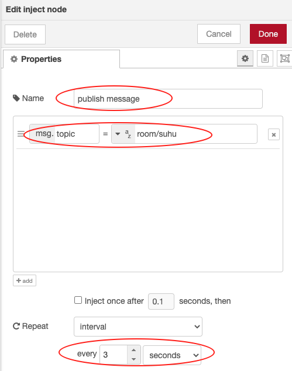
Seret juga
node functionke worksheet, sesuaikan propertiesnya seperti pada gambar berikut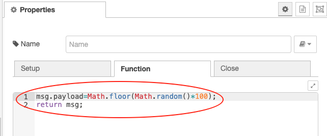
Jangan lupa seret juga
node mqtt outpada kategori network, tambahkan server broker agar bisa publish data dengan cara klikicon pensil. Konfigurasinya adalah sebagai berikut adalah sebagai berikut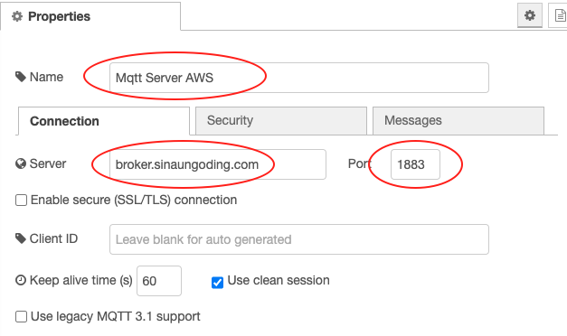
Pada bagian
NameisikanMqtt Server AWS,Serverdiisikanbroker.sinaungoding.comdanportisikan1883.Untuk
node mqtt outkira-kira seperti berikut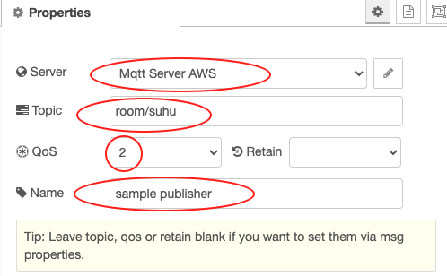
Perhatian gambar berikut untuk flow lengkapnya, setelah semua node dihubungkan.
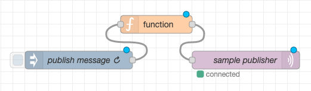
Tambahkan
node mqtt inke worksheet, sesuaikan konfigurasi sebagai berikut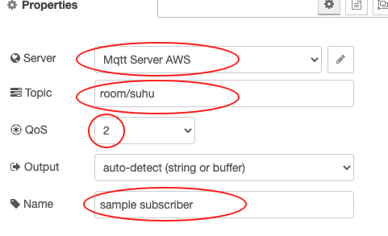
Pada bagian
Server, Topic dan Qosdisamakan dengannode mqtt outsedangkanNamesilakan isikan dengansample subscriber.Tambahkan node terakhir yaitu
node debug, sementara untuk kongifigurasinya tidak perlu disesuaikan. Hubungkan kedua node tersebut sehingga menjadi sebagai berikut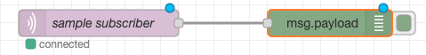
Sehingga flow lengkap dari langkah awal sampai akhir adalah sebagai berikut
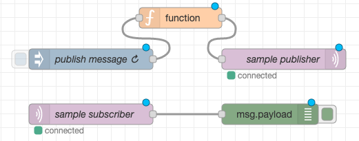
Verifikasi Hasil Percobaan
Setelah dilakukan deploy, kemudian klik tab debug atau icon kutu seharusnya adalah sebagai berikut. Adapun untuk nilainya
pasti berbeda
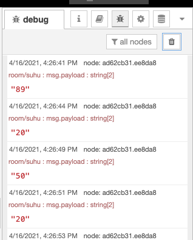
Pertanyaan
- Pada
node inject, pada propertiesRepeatdengan nilaiinterval. Apakah fungsinya? - Apakah yang dimaksud dengan baris kode
msg.payload=Math.floor(Math.random()*100);? - Bagian
node mqtt out, apakah fungsiQosdengan nilai 2?
2. Menghubungkan Smart Device Node-RED
Pada praktikum kali ini akan dibuat sebuah dashboard untuk menampilkan suhu yang dikirimkan oleh ESP-8266 menggunakan protokol MQTT. Langkah awal kita perlu menyiapkan Node-RED selanjutnya kita buat kode di sisi ESP-8266.
Silakan buat flow baru dengan cara
klik tombol plus(+), tambahkan terlebih dahulunode mqtt inke worksheet dengan konfigurasi sebagai berikut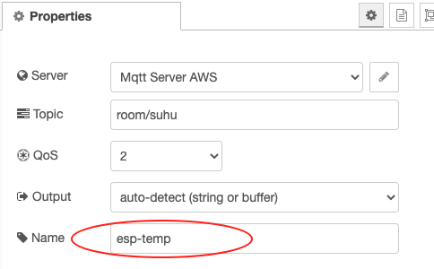
Konfigurasi mirip dengan yang sebelumnya, tetapi yang membedakan adalah pada bagian
Nameyang diisikan denganesp-tempBuatlah dashboard dengan tab Site dengan title
Node-RED Dashboarddengan layout adalah sebagai berikut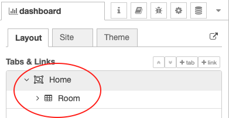
Tambahkan
node chartdan sesuaikan konfigurasinya menjadi sebagai berikut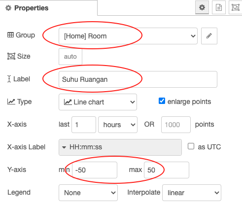
Jangan lupa pada bagian Name diisikan dengan room-temp.
Hubungkan kedua node tersebut dan Deploy, tampilan dashboard secara utuh menjadi demikian
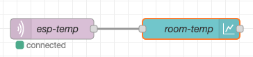
Langkah terakhir yang perlu dilakukan yaitu membuat kode smart device, ESP8266. Tambahkan atau pasang sensor DHT11 yang rencananya akan kita tampilkan pada dashboard yang sebelumnya telah kita buat. Kode lengkapnya adalah sebagai berkut
#include <Arduino.h>
#include <ESP8266WiFi.h>
#include <PubSubClient.h>
#include <SimpleDHT.h>
const char *ssid = "****";//silakan disesuaikan sendiri
const char *password = "****";//silakan disesuaikan sendiri
const char *mqtt_server = "broker.sinaungoding.com";
WiFiClient espClient;
PubSubClient client(espClient);
SimpleDHT11 dht11(D7);
long now = millis();
long lastMeasure = 0;
void setup_wifi()
{
delay(10);
Serial.println();
Serial.print("Connecting to ");
Serial.println(ssid);
WiFi.begin(ssid, password);
while (WiFi.status() != WL_CONNECTED)
{
delay(500);
Serial.print(".");
}
Serial.println("");
Serial.print("WiFi connected - ESP IP address: ");
Serial.println(WiFi.localIP());
}
void reconnect()
{
while (!client.connected())
{
Serial.print("Attempting MQTT connection...");
if (client.connect("ESP8266Client"))
{
Serial.println("connected");
}
else
{
Serial.print("failed, rc=");
Serial.print(client.state());
Serial.println(" try again in 5 seconds");
delay(5000);
}
}
}
void setup()
{
Serial.begin(115200);
Serial.println("Mqtt Node-RED");
setup_wifi();
client.setServer(mqtt_server, 1883);
}
void loop()
{
if (!client.connected())
{
reconnect();
}
if (!client.loop())
{
client.connect("ESP8266Client");
}
now = millis();
if (now - lastMeasure > 5000)
{
lastMeasure = now;
int err = SimpleDHTErrSuccess;
byte temperature = 0;
byte humidity = 0;
if ((err = dht11.read(&temperature, &humidity, NULL)) != SimpleDHTErrSuccess)
{
Serial.print("Pembacaan DHT11 gagal, err=");
Serial.println(err);
delay(1000);
return;
}
static char temperatureTemp[7];
dtostrf(temperature, 4, 2, temperatureTemp);
Serial.println(temperatureTemp);
client.publish("room/suhu", temperatureTemp);
}
}
Upload kode di atas ke ESP8266 Anda dan amati hasilnya.
Library yang digunakan pada project di atas adalah
winlinvip/SimpleDHT@^1.0.14danknolleary/PubSubClient@^2.8Hal yang perlu diperhatikan juga adalah karena server broker mengarah ke alamat yang sama, silakan diganti topik baik yang untuk publish atau subsribe, diganti menggunakan nim masing-masing sehingga akan berbeda setiap mahasiswa. misalkan topik yang digunakan
07541099/room/suhu.
Verifikasi Hasil Percobaan
Hasil percobaan tersebut dapat dilihat pada serial monitor dan Node-RED melalui browser, kurang lebih seperti gambar di bawah
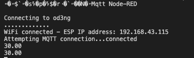
Tampilan serial monitor
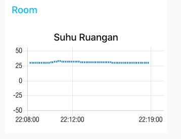
Tampilan Node-RED pada browser
Pertanyaan
- Modifikasi program di ESP8266 di atas agar bisa melakukan subscribe dengan topik
room/lamp? - Tambahkan kode di atas agar bisa publish nilai kelembaban dengan topik
room/humadity? - Tambah
node chartagar dapat menampilkan nilai kelembaban,node chartmasih dalam satu group yaitu Room pada dashboard Node-RED.
Video Pendukung
Tugas
Masih lanjutan dengan tugas, tambahkan sensor LDR dan LED RGB pada ESP8266. Ketentuannya adalah sebagai berikut
- Tab Home terdiri dari group Control, Monitoring, dan Cahaya.
Group Controlmemiliki 3node switchdan 3text statis, fungsi dari group ini adalah untuk menghidupkan dan mematikan led RGB.Group Monitoring2node chartuntuk menampilkan suhu dan kelembaban.Group Cahayaterdiri daritextdangauge, text untuk menampilkan kategori terang, redup, dan gelap. Sedangkannode gaugeuntuk menampilkan nilai sensor LDR.
- Tab Contact Pada tab ini digunakan untuk menampilkan data kelas, NIM, dan Nama. Silakan diisi dengan nama Anda masing-masing.
Hasil yang diharapkan adalah sebagai berikut
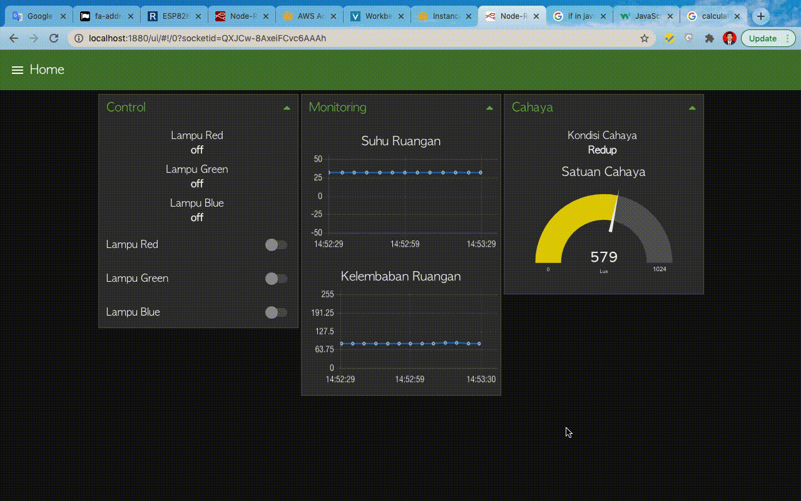